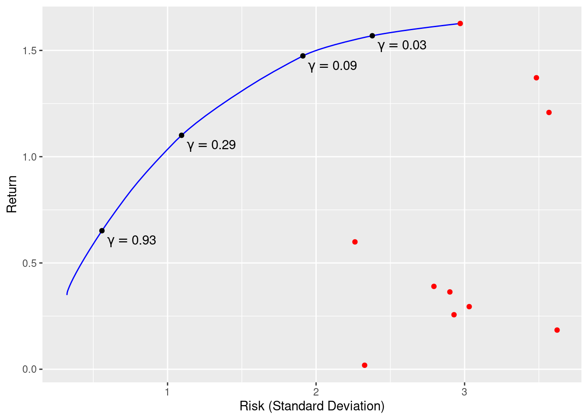
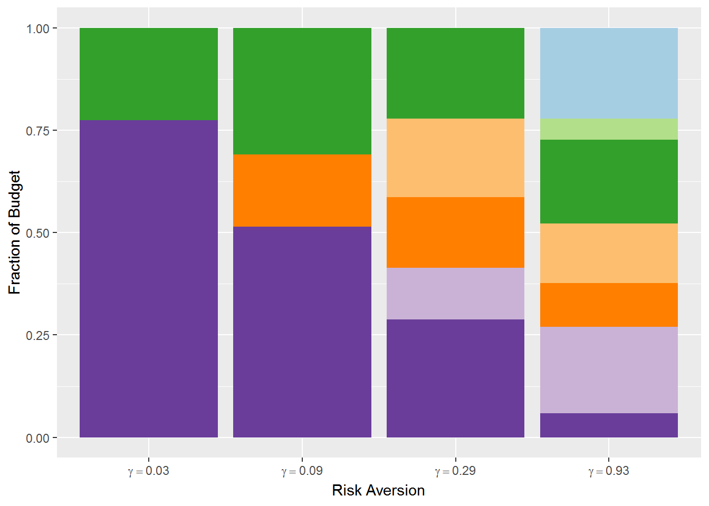

Chapter 16 Portfolio Estimation
16.1 Goals
- Demonstrate
CVXRon a financial example
16.2 Markowitz Portfolio Problem
The Markowitz portfolio problem (Markowitz 1952; Roy 1952; Lobo, Fazel, and Boyd 2007) is well known in finance. We will solve this problem under various constraints.
We have \(n\) assets or stocks in our portfolio and must determine the amount of money to invest in each. Let \(w_i\) denote the fraction of our budget invested in asset \(i = 1,\ldots,m\), and let \(r_i\) be the returns (, fractional change in price) over the period of interest. We model returns as a random vector \(r \in {\mathbf R}^n\) with known mean \(\mathbf{E}[r] = \mu\) and covariance \(\mathbf{Var}(r) = \Sigma\). Thus, given a portfolio \(w \in {\mathbf R}^n\), the overall return is \(R = r^Tw\).
Portfolio optimization involves a trade-off between the expected return \(\mathbf{E}[R] = \mu^Tw\) and the associated risk, which we take to be the return variance \(\mathbf{Var}(R) = w^T\Sigma w\). Initially, we consider only long portfolios, so our problem is \[ \begin{array}{ll} \underset{w}{\mbox{maximize}} & \mu^Tw - \gamma w^T\Sigma w \\ \mbox{subject to} & w \geq 0, \quad \sum_{i=1}^n w = 1, \end{array} \] where the objective is the risk-adjusted return and \(\gamma > 0\) is a risk aversion parameter.
16.3 Example
We construct the risk-return trade-off curve for \(n = 10\) assets and \(\mu\) and \(\Sigma^{1/2}\) drawn from a standard normal distribution.
## Problem data
set.seed(10)
n <- 10
SAMPLES <- 100
mu <- matrix(abs(rnorm(n)), nrow = n)
Sigma <- matrix(rnorm(n^2), nrow = n, ncol = n)
Sigma <- t(Sigma) %*% Sigma
## Form problem
w <- Variable(n)
ret <- t(mu) %*% w
risk <- quad_form(w, Sigma)
constraints <- list(w >= 0, sum(w) == 1)
## Risk aversion parameters
gammas <- 10^seq(-2, 3, length.out = SAMPLES)
ret_data <- rep(0, SAMPLES)
risk_data <- rep(0, SAMPLES)
w_data <- matrix(0, nrow = SAMPLES, ncol = n)
## Compute trade-off curve
for(i in seq_along(gammas)) {
gamma <- gammas[i]
objective <- ret - gamma * risk
prob <- Problem(Maximize(objective), constraints)
result <- solve(prob)
## Evaluate risk/return for current solution
risk_data[i] <- result$getValue(sqrt(risk))
ret_data[i] <- result$getValue(ret)
w_data[i,] <- result$getValue(w)
}Note how we obtain the risk and return by directly evaluating the value of the separate expressions:
result$getValue(risk)
result$getValue(ret)The trade-off curve is shown below. The \(x\)-axis represents the standard deviation of the return. Red points indicate the result from investing the entire budget in a single asset. As \(\gamma\) increases, our portfolio becomes more diverse, reducing risk but also yielding a lower return.
cbPalette <- brewer.pal(n = 10, name = "Paired")
p1 <- ggplot() +
geom_line(mapping = aes(x = risk_data, y = ret_data), color = "blue") +
geom_point(mapping = aes(x = sqrt(diag(Sigma)), y = mu), color = "red")
markers_on <- c(10, 20, 30, 40)
nstr <- sprintf("gamma == %.2f", gammas[markers_on])
df <- data.frame(markers = markers_on, x = risk_data[markers_on],
y = ret_data[markers_on], labels = nstr)
p1 + geom_point(data = df, mapping = aes(x = x, y = y), color = "black") +
annotate("text", x = df$x + 0.2, y = df$y - 0.05, label = df$labels, parse = TRUE) +
labs(x = "Risk (Standard Deviation)", y = "Return")
We can also plot the fraction of budget invested in each asset.
w_df <- data.frame(paste0("grp", seq_len(ncol(w_data))),
t(w_data[markers_on,]))
names(w_df) <- c("grp", sprintf("gamma == %.2f", gammas[markers_on]))
tidyW <- gather(w_df, key = "gamma", value = "fraction", names(w_df)[-1], factor_key = TRUE)
ggplot(data = tidyW, mapping = aes(x = gamma, y = fraction)) +
geom_bar(mapping = aes(fill = grp), stat = "identity") +
scale_x_discrete(labels = parse(text = levels(tidyW$gamma))) +
scale_fill_manual(values = cbPalette) +
guides(fill = FALSE) +
labs(x = "Risk Aversion", y = "Fraction of Budget")## Warning: `guides(<scale> = FALSE)` is deprecated. Please use `guides(<scale> = "none")` instead.
16.4 Discussion
Many variations on the classical portfolio problem exist. For instance, we could allow long and short positions, but impose a leverage limit \(\|w\|_1 \leq L^{max}\) by changing
constr <- list(p_norm(w,1) <= Lmax, sum(w) == 1)An alternative is to set a lower bound on the return and minimize just
the risk. To account for transaction costs, we could add a term to the
objective that penalizes deviations of \(w\) from the previous
portfolio. These extensions and more are described in
Boyd et al. (2017). The key takeaway is that all of these convex
problems can be easily solved in CVXR with just a few alterations
to the code above.